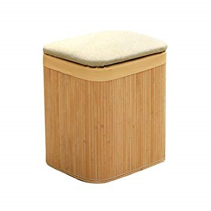
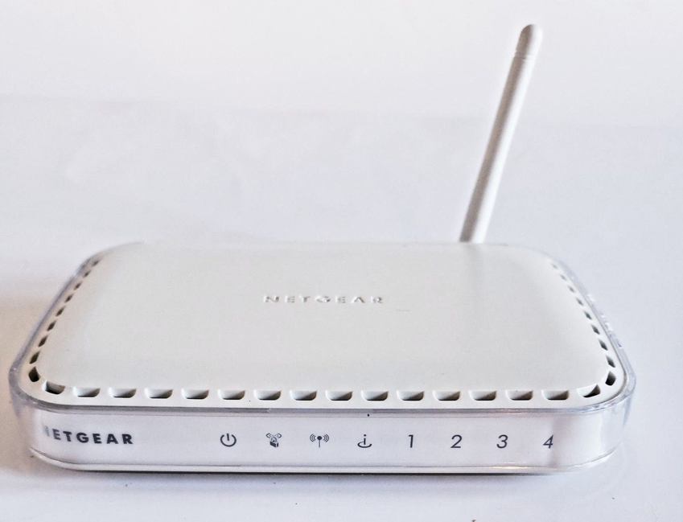
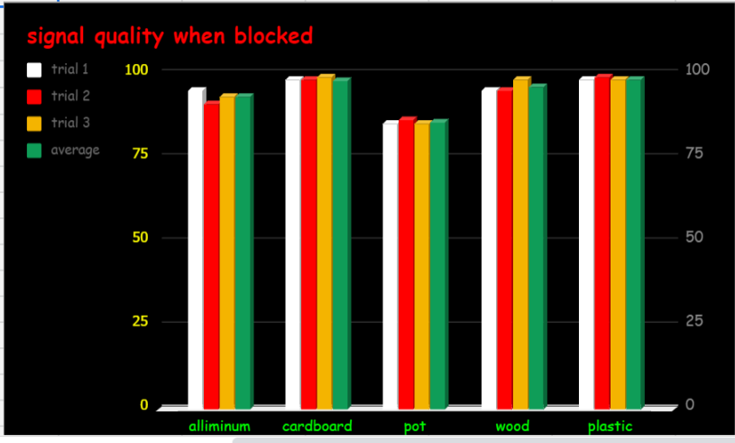
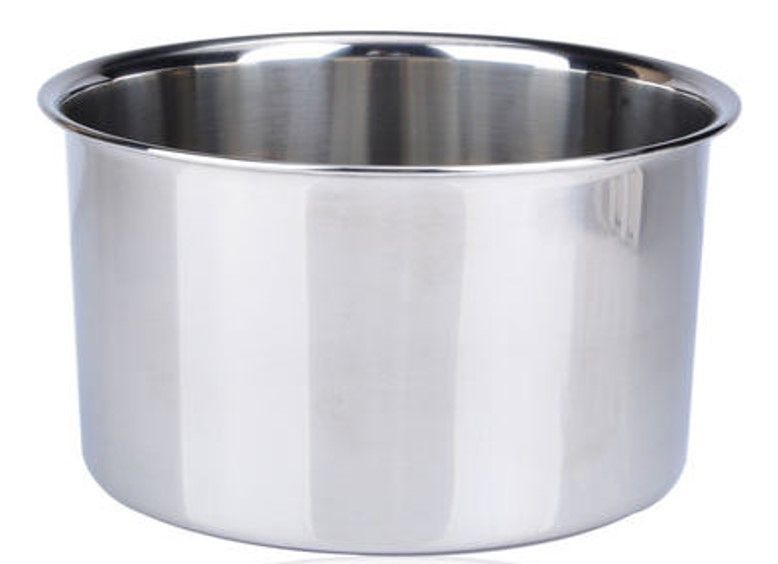
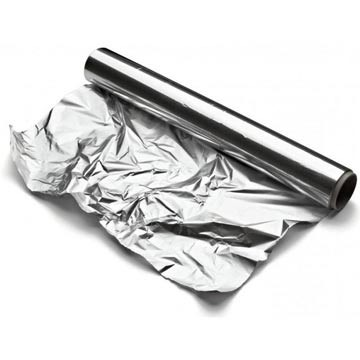
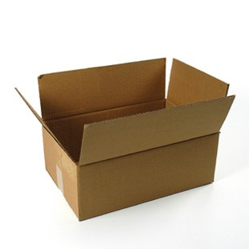

<!doctype html>
<html>

<head>
    <title>
        Science project
    </title>
    <style>
        .p2 {
            border: 20px red ridge;
            font-size: 40px;
            padding: 5px;
            margins: 5px;
        }
    </style>
</head>

</html>

<body style="background-color: yellow; text-align: center; padding:20px; ">
    <header style="color: blue; border: 15px double red;">
        <h1>
            Science project: What materials can block wi-fi signals.
        </h1>
    </header>
    <br>
    <br>
    <nav style="position: -webkit-sticky; position: sticky; border: 3px darkgreen; padding: 3px backround-color: green; text-align: center;">
        <ul class="ul2">
            <li> <a href="About moi.html">about moi </a> </li>
            <li> |<a href="index.html">home</a> </li>
            <li> |<a href="science project.html">Myscience project</a> </li>
        </ul>
    </nav>
    </ul>
    <br>
    <br>
    <br>
    <p style="font-size: 30px;">
        Hello, this is my 5th grade science project on what materials block wi-fi signals.
        I got the idea from sciencebuddies.org .
        <br>
        <br>
        <br>
        <br>
        <br>
    </p>
    <p style="font-size: 80px;">
        What materials can block wifi signals?
    </p>
    <br>
    <br>
    <br>
    <p style="font-size:80px; border: 10px solid; padding: 20px;">
        <b>Abstract</b>
    </p>
    <p class="p2">
        What materials can block a wifi signal
        <br>
        Objective: To find out what materials block wifi signals and which ones block stronger
        <br>Methods and materials: Surround or block the wifi router with various materials such as, a metal pot,
        wood,plastic,cardboard & aluminum foil. once this is done find the signal strength for each material by using
        wifi-info-view on the computer
        <br> Results: The average when the pot blocking the router was 85.33, making the pot block the most signal and
        the
        plastic blocked the least with an average of 98.33.
        Conclusion: When my testing was done i found out that the more tough and metallic materials blocked more
        signals than other materials.
    </p>
    <p style="font-size:80px; border: 10px solid; padding: 20px;">
        Problem
    </p>
    <p class="p2">
        In today’s world internet connection has become the basic amenity and everybody uses it in daily life. However,
        many times people complain about weak wireless connection at their house or workplace. This can be caused by
        various materials covering or blocking your router. So I decided to test how these materials can affect your
        wireless connection. 
    </p>
    <p style="font-size:80px; border: 10px solid; padding: 20px;">
        Hyphothesis
    </p>
    <p class="p2">
        I think that a metal object will block it the strongest because it is metal and it has a very thick border. And
        I think the cardboard box will block it the weakest because it is made out of cardboard.
    </p>
    <br>
    <br>
    <p style="font-size:80px; border: 10px solid; padding: 20px;">
        Background reasearch
    </p>
    <p class="p2">
        I conducted each test by placing cone like or cylinder-like objects around the router, and sheet or wall-like
        objects in front of the object. Next, I found the data values using the app wifi-info-view. Then I recorded the
        data in my graph and in my journal. My basic knowledge is tougher, more surrounding materials will usually
        block more signals.
        <span style="text-align:end;"> </span>
    </p>
    <p style="font-size:80px; border: 10px solid; padding: 20px;">
        Materials and Procedures
    </p>
    <p class="p2">
        My materials are wifi-info-view for finding my data. And a pot, aluminum foil, wood, cardboard box, computer,
        plastic container, and a router. I first covered or blocked my router with a material then I wrote down what
        was the signal quality when the material was present. Then I double-checked my data by repeating the process
        for each material 2 times and then finding an <u> average </u> for each.

    </p>
    <p style="font-size:80px; border: 10px solid; padding: 20px;">
        Data,Graphs, and, pics
    </p>
    <p>
        <br>
         <span style="text-align:end;">
            </span>
        <br> 
    </p>
    </p>
    <p style="font-size:80px; border: 10px solid; padding: 20px;">
        Results
    </p>
    <div style="border:20px red ridge; font-size: 40px; padding: 5px; margin: 5px;">
        <p>
            So I have my results and the pot had an average signal quality of 85.33 making it block the most signal.
            And the average signal quality when the plastic blocked the router was 98.33 making it block the least
            signal. Here is a list of the materials and their averages in order.(least amount blocked to greatest.)
        </p>
        <ul>
            <li>Plastic (98.33)</li>
            <li> 97.66</li>
            <li> 96</li>
            <li> 93 </li>
            <li>85.33 </li>

        </ul>
    </div>
    <p style="font-size:80px; border: 10px solid; padding: 20px;">
        Conclusion
    </p>
    <p class="p2">
        My hypothesis was correct, the metal pot blocked the most signal and the plastic blocked the least. And the
        tougher the object the more signal it blocked. I learned how that materials like metal can block lots of
        signals compared to materials like plastic and cardboard. With this information I will now know what maybe
        causing bad signal problems in my house. 
    </p>
    <p style="font-size:80px; border: 10px solid; padding: 20px;">
        Next steps
    </p>
    <p class="p2">
        If I could go further into my project I could have used more diverse materials and more materials in general.
        And also I could have done more trials so each material can have a more precise average. Also, the router used
        could’ve been better brand-wise.
    </p>
    <footer>
        copyright@aaryan rawat
    </footer>

</body>